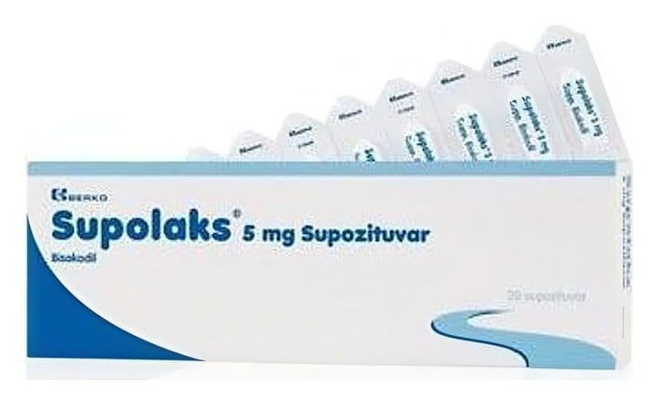

Supolaks 5 mg SUPOZITUVAR,5 Adet

Ne için kullanılır
KT · Bölüm 1• SUPOLAKS hemen hemen beyaz, homojen (tekdüze) görünüşlü supozituvar (fitil) şeklinde sunulmaktadır.
• SUPOLAKS 5, 10 veya 20 adet supozituvar (fitil) içeren karton kutuda takdim edilmektedir.
• Her bir supozituvar (fitil) 5 mg etkin madde (bisakodil) içerir. Bisakodil kontakt laksatifler ilaç grubundandır.
• SUPOLAKS hastanın kabızlık şikayetlerinin tedavisinde uyarıcı laksatif (ishal yapıcı) olarak kullanılmaktadır.
• SUPOLAKS ameliyat ya da röntgen gibi araştırma işlemlerinden önce bağırsak boşaltılmasında ve tüm endikasyonlarda müshil, lavman yerine kullanılmaktadır.